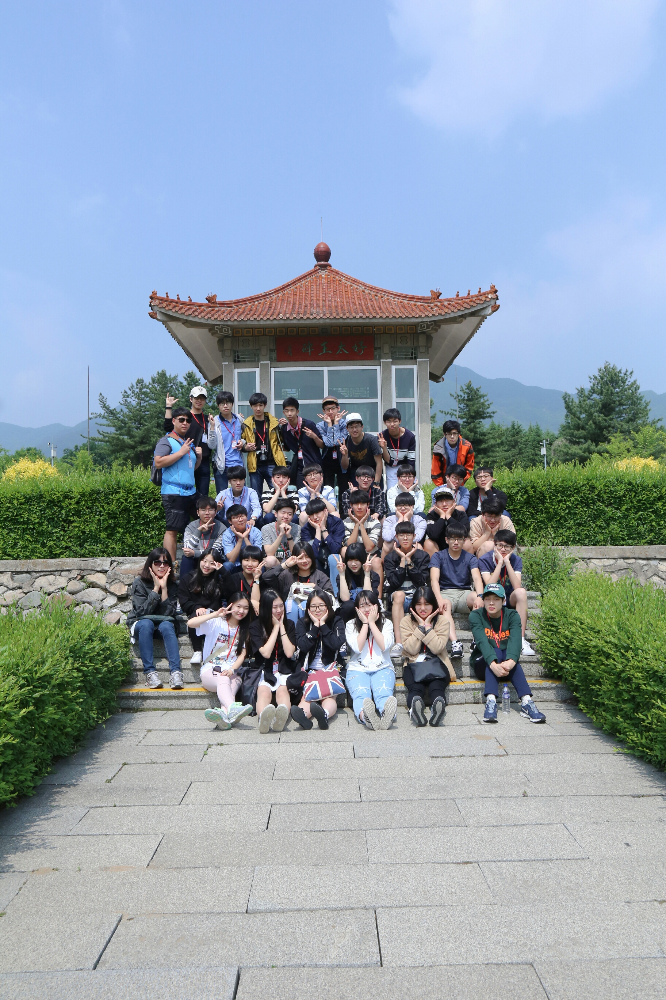

수학여행을 떠나다.
중국에서의 첫째날 5월 24일
Posted by LimBeomJun on NovemBer 11, 2016
5월 24일 기다리고 기다리던 수학여행을 떠났다. 당시 북한이 중국 접경지역에 공작원을 풀어 한국인을 납치하여 납북하려한다는 사실이 보도되었고 수학여행을 가네 안가네 말이 많았지만 학교측은 안전조치를 추가한 후 떠나기로 하였고 안 가는 친구 몇 명을 제외한 나머지 친구들은 모두 수학여행 길에 올랐다. 간만에 해외여행에 들뜬 나는 기분이 정말 좋았다. 그렇게 3일간의 여정이 시작되었다.
중국으로 가는 비행기 중국 도착 후 연변박물관에서 용정중학교에서
용정중학교에서
백두산에 올라가다.
중국에서의 둘째날 5월 25일
Posted by LimBeomJun on NovemBer 11, 2016
둘째날에 백두산에 가게 되었다. 한반도에서 가장 높은 산에 올라간다니 정말 설레고 떨렸다. 산의 대부분은 버스로 이동했는데, 차가 올라갈 수 있는 가장 높은 곳 까지 올라가자 안개가 끼고 우박이 떨어지기 시작했다. 아래쪽에 날씨는 화창했기 때문에 '별일 있겠어' 하고 옷을 안가지고 갔었는데 다행히 가져간 비옷이 바람과 우박을 막아줘서 옷을 안 빌리고도 따듯하게 올라갈 수 있었다. 올라가면서 우박과 바람은 더욱 거세졌는데 때문에 천지를 못봐서 너무 아쉬웠다. 다음에 천지에 오게되면 꼭 맑은 날씨로 맞이해줬으면 좋겠다. 백두산에서 내려오는 길에 식사도 하고 장백폭포도 들렸는데 밥은 별로였지만 장백폭포는 멋졌지만 날씨가 정말 아쉬웠다. 백두산에서 하산 후에는 마트체험을 했는데 생각보다 우리나라에 있는 물품이 많아서 신기했다.
백두산 올라가기 전 백두산 버스에서 내려서 백두산 천지에서 백두산 천지에서 백두산 하산중에 장백폭포에서 장백폭포에서 마트체험 중다양한 체험
중국에서의 셋째날 5월 26일
Posted by LimBeomJun on NovemBer 11, 2016
셋째날에는 광개토대왕릉비를 본 후 광개토대왕릉, 장수왕릉을 보게 되었다. 거의 다 와서쯤 버스 접촉사고가 난 것이 아직도 기억에 남는다. 웅장한 크기의 비석과 무덤을 보니 정말 놀라웠다. 그 후 통화조선족중학교에 가서 조선족 친구들을 만나봤는데 시간이 너무 적어서 제대로 된 얘기도 못해보고 온것이 아쉽다. 마지막으로 장춘 호텔에서 숙박했는데 지금까지 숙소중에 가장 좋았다.
 광개토대왕릉비 앞에서 통화중에서 만난 친구와
통화중에서 만난 친구와
마지막 숙소에서
통화중에서 만난 친구와
통화중에서 만난 친구와
마지막 숙소에서
중국 안녕~
중국에서의 마지막 날 5월 27일
Posted by LimBeomJun on NovemBer 11, 2016
아침에 일찍 일어나자마자 맛있는 아침을 먹고 편지를 쓰고 장춘 문화광장으로 향했다. 장춘 문화광장에서 조금의 자유시간을 가지니 벌써 한국으로 돌아가야할 시간이 되었다. 중국에 왔을 때는 열악한 환경때문에 집에 가고 싶었는데 막상 또 집에가려니 엄청 아쉬웠다. 다음에는 중국 상해, 북경 등 대도시들도 가보고 싶다. 내가 왔던 장춘,통화, 백두산도 언젠간 다시 올 것이다.그 동안 잘 있어 중국
 장춘 문화광장에서
장춘 문화광장에서
 장춘 문화광장에서
장춘 문화광장에서